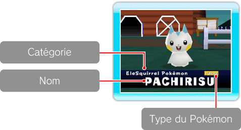
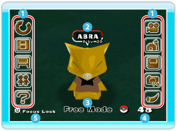

|
9
|
Écrans de jeu
|
 |
|
Écran de présentation des Pokémon
 Écran du Ranch
 Menu principal
Lorsque tu pointes l'écran, le menu principal s'affiche. Les options auxquelles tu as accès seront alors indiquées. (→p.10) Nom
Le nom du Pokémon ou du Mii choisi sera affiché lorsque tu seras en mode
Focus (suivre). Si tu "marques" tes Pokémon préférés, tu peux choisir de ne
voir que ces Pokémon au Ranch en sélectionnant Favorites (mes favoris) dans
l'option Pokémon du menu Ranch. (→p.17)
Modes (→p.10)
Lorsque le mode Free Mode (mode déplacement libre) est choisi,
les mots Free Mode (mode déplacement libre) sont affichés à l'écran.
Si rien ne s'affiche, c'est que tu es en Auto Mode (mode automatique).
Nombre de Pokémon
Tu vois ici le nombre de Pokémon que tu as dans le Ranch. Focus Lock (caméra verrouillée)
Lorsque tu choisis un Pokémon ou un Mii à suivre,
Focus Lock (caméra verrouillée) s'affiche à l'écran.
Si tu appuies sur |

 en pointant un Pokémon ou un Mii, tu peux verrouiller la caméra sur lui.
Appuie à nouveau sur
en pointant un Pokémon ou un Mii, tu peux verrouiller la caméra sur lui.
Appuie à nouveau sur
 |
 |
 |